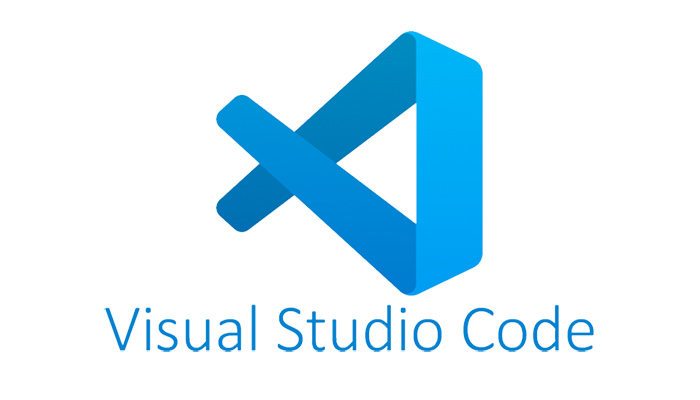

From my previous assignment, AI is the most fascinating part of IT that I would like to figure out. My project is going to be about generating a system with AI integration of using drones to clean windows on skyscrapers. Along with this system, there is a program that will calculate the size of the windows and estimate how many drones does it take to execute the work. AI, as well as machine learning (ML) and deep learning (DL), will be applied to the program to ensure the work is optimized. The system will be installed for pilots on some of the buildings located in the city center in Ho Chi Minh City. To be honest, my expectation for this project is really large because it can replace human to clean windows on skyscrapers, thus, abrupt risks would be avoided.
Three
drones with customized for specialized features: Flushing, scrubbing, drying.
*Notice:
We can combine two of the three features above for a drone to reduce the fee.
Flushing
and drying feature cannot use together due to the problem of electricity.
A
laptop is recommended because this job offers you to move continuously between
different buildings, the laptop will be convenient and compact for you. For the
specs, you must consider a CPU with high performance because it needs to run
tasks related to AI.
Engineers can develop the program through Visual Code Studio (VCS) with popular languages such as Python, C#, C++, and Java. VCS is completely free so they do not need to pay anything, just download it and start the work. Besides, VCS is open-source, they can easily modify, update the program to be suitable for the work (Open Source).
NVIDIA Jetson Nano Developer Kit
This
is an extremely useful tool for this job because engineers can easily develop
special tasks related to AI, machine, and deep learning. It can help engineers
develop AI in the censor of the drones to detect the area that needs to be
cleaned or execute the data of the building. It also supports some famous AI
frameworks like Tensorflow or Pi Torch so it will create favorable conditions
for engineers to complete tasks easier and faster (NVIDIA Developer, 2019).
Engineers should have advanced knowledge of Python. They will use this language to develop many tasks related to AI. The reason why Python is highly recommended because the syntax is more understandable and flexible than other languages like C++ and Java. Another reason is machine learning, this is the advantage of Python when making a comparison to C++ and Java, Python is more straightforward and people can easily approach it.
This project will be an enormous change for the windows cleaning job. First, instead of spending more than 3 months to clean the outside of a skyscraper, the drones just only need less than 5 hours to complete it. Second, the owner of the building can save a large amount of money using for cleaning the window, the money can be saved up to $5000. Finally, it will be the safest and fastest solution for this job when people do not have to work at a very high place and dangerous. Moreover, throughout this project, I can improve my knowledge as well as skills for developing AI a lot, it will be an impressive experience for me as a software engineer.
Both of them are interested in my idea. They said that the drones could help a lot of workers that cleaning windows of high buildings, in addition, it can reduce the number of accidents related to window cleaning on skyscrapers. They were impressed about how AI had been applied to drones so it would operate smarter.
However, there are some problems which I have received in the feedback. The first person is Khanh, he said that all the feature should have been combined together but still keeping the performance or higher. He wants it to reduce more money because the fee to deploy all the drones is too expensive so it must decrease the number of drones. In my opinion, this is a good idea because I can save a lot of money but I think it is difficult to put all the features in the drone. Some problems may incur due to the problem of an electrical circuit in the drone. As a result, it can make the drone explodes or falls during the process.
The next person is Nguyen, who was worried about the accuracy of data of the weather that the drone use, there is no guarantee of full adaptability to unpredictable weather conditions like storms, lightning, heavy sky projectiles like rain droplets or hails. Obviously, I have prepared for this situation, all the drone will have the ability of water-resistant, it allows the drone to withstand water for 30 minutes, in that time, engineers can access the drone through the laptop and order it to quit the task and land. He also mentioned the ethics of automation, workers would lose their jobs due to these drones, these people subsist on low wages and brave dangers to clean windows on skyscrapers. He recommended me to use AR technologies to enable the workers to control the drones from afar, moreover, opening training sessions and workshops on how to operate and maintain the drones will be the best solution to keep their jobs and improve the quality of their work. I think the way of using AR is really interesting, as a consequence, I will open a workshop for the workers to train them for operating the drone with AR, this will create a new job for them and they can have a higher salary.